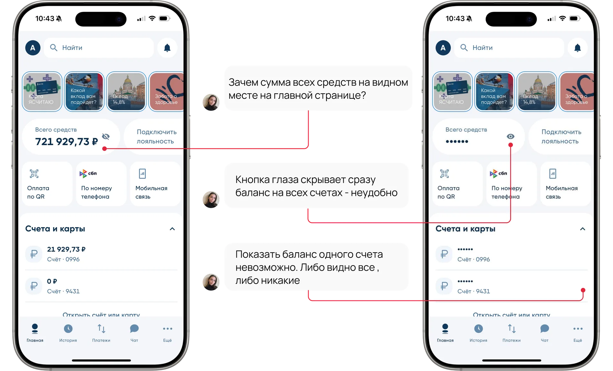
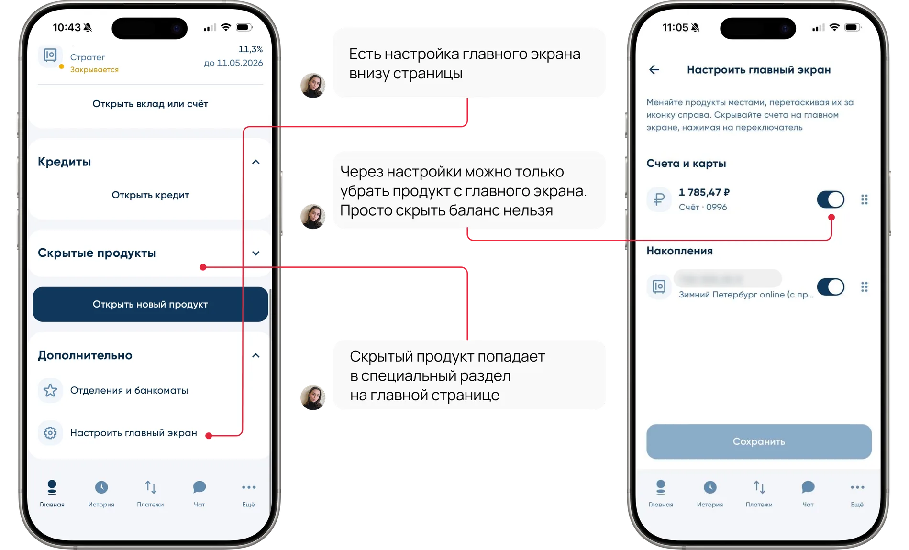
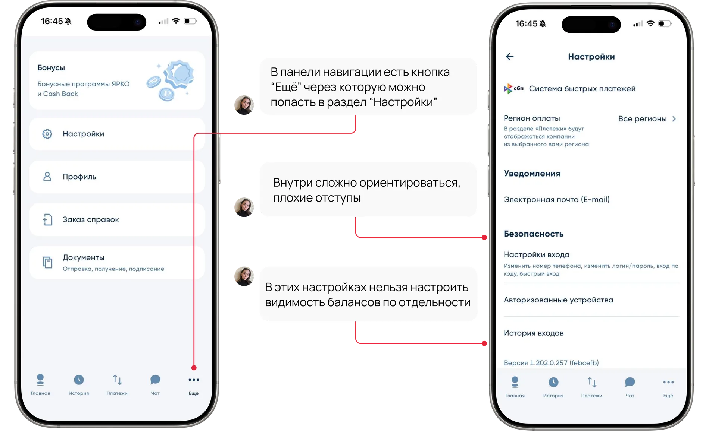
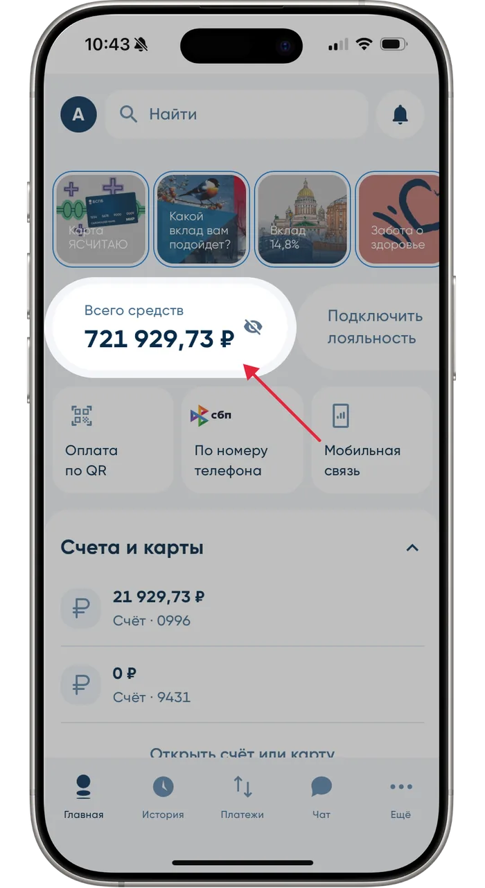
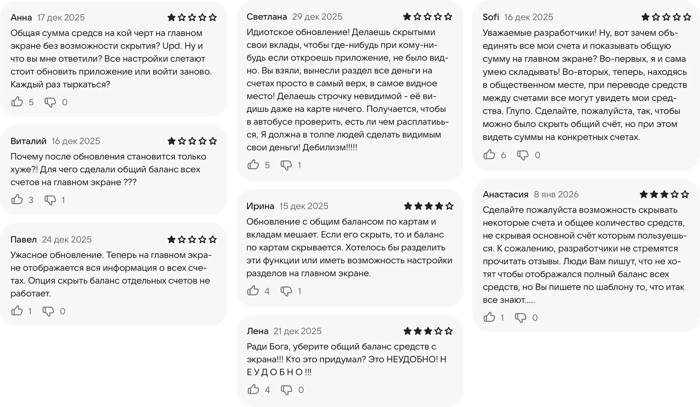
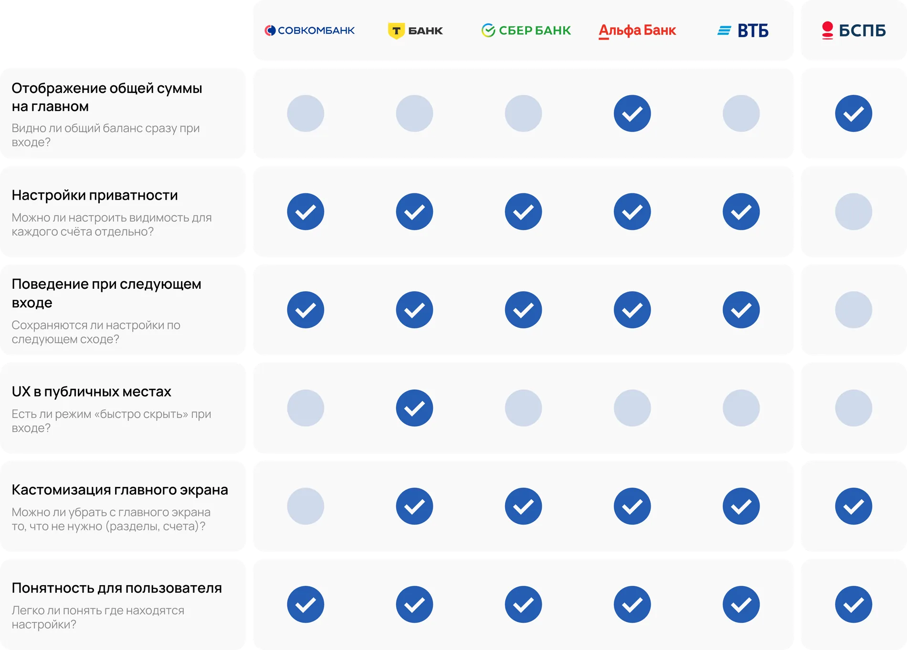
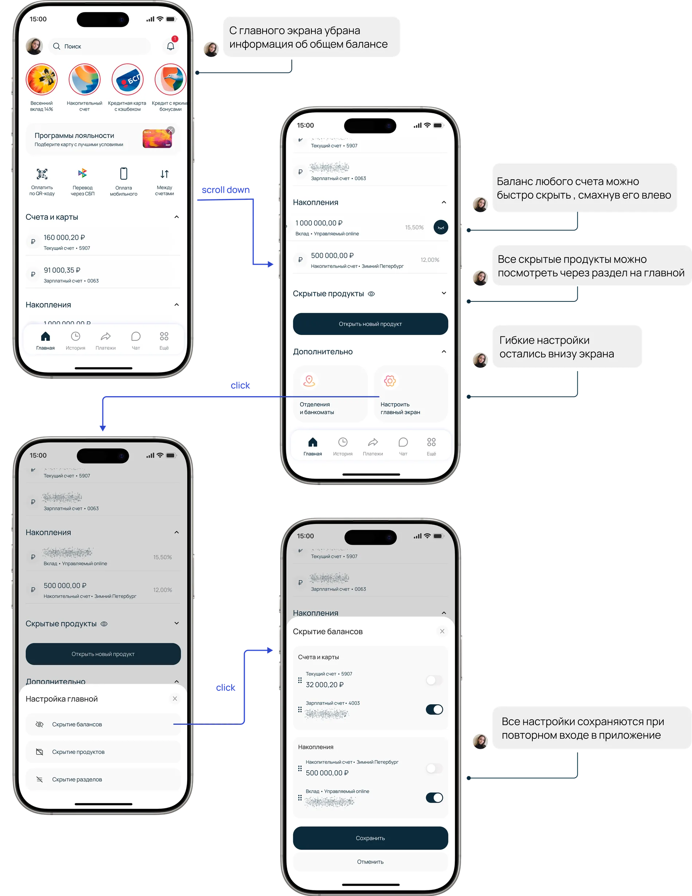

Потеря клиентов
Если пользоваться приложением неудобно, человек может уйти в другой банк
Разработала решение для сохранения приватности баланса
в общественных местах: настройки видимости и скрытие
встряхиванием телефона
Баланс виден сразу — и это проблема. В общественном месте
достаточно открыть приложение, чтобы кто-то рядом увидел
все ваши деньги.
При входе в приложение пользователь сразу видит совокупный баланс всех счетов и вкладов на видном месте
Изменить логику отображения балансов на главном экране: скрыть общую сумму по умолчанию и добавить гибкие настройки видимости счетов и разделов
Для начала я провела аудит текущего интерфейса: как приложение показывает баланс и что можно настроить.



Я провела интервью с 7 пользователями приложения, проанализировала результаты и выделила ключевые моменты.

Я решила собрать больше информации о том, на что жалуются пользователи, и проверить, встречается ли эта проблема в отзывах в интернете. Всего просмотрела более 100 отзывов.

Отзывы подтвердили: пользователям действительно неудобно, когда баланс всех счетов виден на главном экране.
К чему может привести игнорирование проблемы
Если пользоваться приложением неудобно, человек может уйти в другой банк
Из-за страха, что кто-то увидит баланс, люди реже заходят в приложение в общественных местах
Чтобы привлечь внимание разработчиков, активные пользователи могут оставлять негативные отзывы
Люди могут открывать вклады в других банках, чтобы суммы вкладов не было видно
Проанализировала интерфейсы Сбера, Т-Банка, Альфа-Банка, ВТБ и Совкомбанка и свела результаты в единую таблицу.

Выводы по результатам бенчмаркинга
Гипотезы я формулировала на основе JTBD (Jobs To Be Done).
В решении я рассмотрела два контекста использования приложения:
Пользователь один раз настраивает приложение «под себя» и пользуется им в комфортной обстановке
Пользователь оказался в публичном месте, и ему нужно мгновенно скрыть баланс всех счетов
Для этого сценария я добавила постоянные настройки главного экрана: пользователь управляет видимостью всех элементов — счетов, разделов и балансов.

Через встряхивание телефона на экране ввода пин-кода пользователь может скрыть баланс на всех счетах.
Проект реализован как личный кейс и не запускался, но при проектировании я опиралась на реальные продуктовые метрики. Вот показатели, на которые может повлиять это решение:
Retention
Эффект
Рост retention среди пользователей, которые часто пользуются приложением вне дома
Почему
Чувство безопасности в публичных местах снижает тревожность и повышает желание возвращаться
CSAT и NPS
Эффект
Рост активных пользователей
Почему
Функция вызывает позитивную реакцию и благодарность к продукту в «неудобных» обстоятельствах
Частота использования
Эффект
Рост частоты использования приложения в дневное и вечернее время
Почему
Снимается барьер «проверю баланс, когда буду дома»: это можно сделать сразу